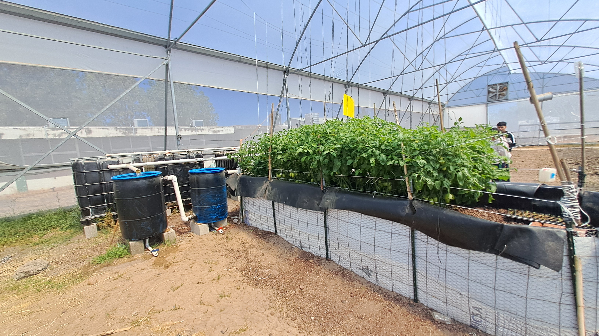

ilustracion 1.CULTIVOS DEL SISTEMA ACUAPONICOilustracion 2. AREA DONDE ESTA INSTALADO EL SISTEMA DE ACUAPONIAilustracion 3. LOS CULTIVOS DE HORTALIZADAS ilustracion 4. CONTENEDOR DE AGUA DONDE ESTAN LOS PECESilustracion 5.LAS PLANTAS QUE SE VEN POR ENCIMA DE DONDE CAE EL AGUA DEL SISTEMA ilustracion 6. BARRILES POR DONDE TRANSITA EL AGUAilustracion 7.OTRA PERSPECTIVA DONDE SE VEN LAS OTRAS PARTES DEL SISTEMA ilustracion 8. BARRILES DONDE PASA EL AGUA Y CONTENEDORES DE LOS CULTIVOS ilustracion 9.HORTALIZAS PRODUCIDAS POR EL SISTEMA ACUAPONICO ilustracion 10. ESTRUCTURA DE LOS COMPONENTES DEL SISTEMA DE ACUAPONIAilustracion 11. SE MUESTRAN LAS TILAPIAS DENTRO DE LOS CONTENEDORESilustracion 12. LOS RESULTADOS OBTENIDOS EN EL CULTIVO DE JITOMATES